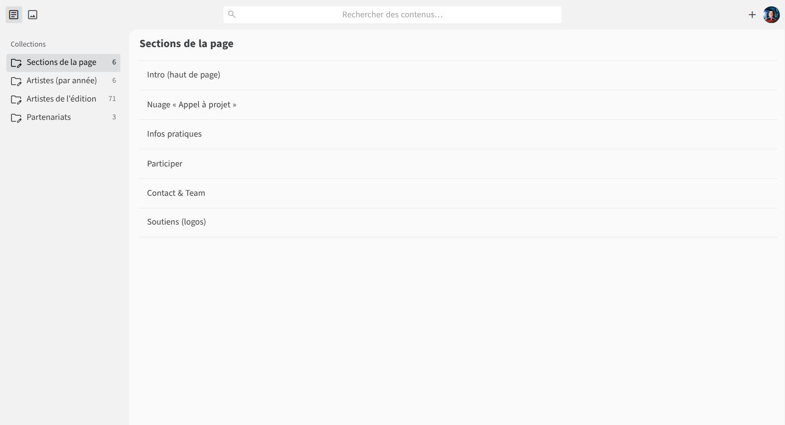
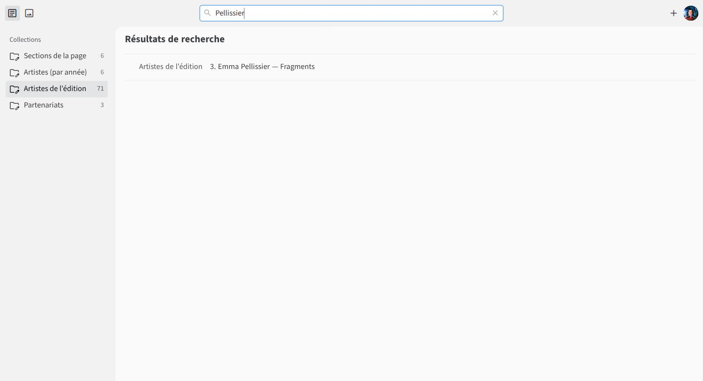
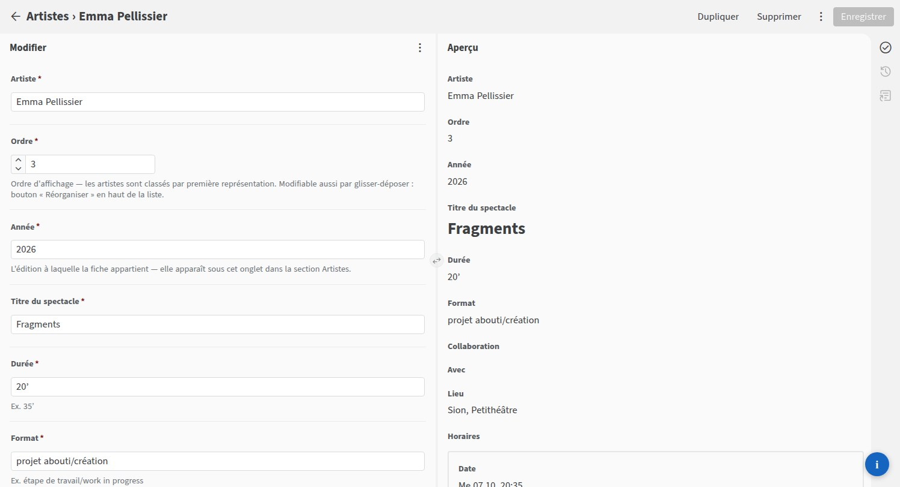
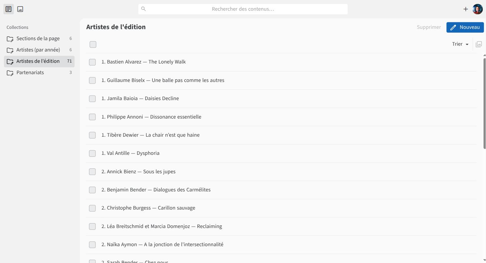
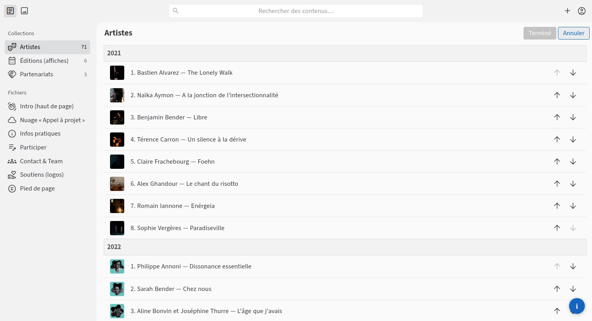

Chaque ligne rappelle où cliquer ; déplie-la pour le mode d'emploi complet.
L'admin est à l'adresse nouveau.faiscommecheztoi.ch/admin (à mettre en favori — l'ancienne adresse faiscommecheztoi.ch/admin y renvoie). GitHub est l'endroit où les fichiers du site sont rangés : un compte GitHub sert simplement de badge d'accès.
La première fois seulement :
Ensuite le navigateur reste connecté. Le second bouton, Se connecter avec un jeton d'accès, est un dépannage technique : ne pas l'utiliser.
Le site n'a pas de base de données comme l'ancien WordPress : chaque enregistrement réécrit un fichier, puis le site se reconstruit tout seul. Compter 2 à 3 minutes avant que la modification soit visible — inutile de recharger frénétiquement.
Quand une fiche est ouverte, la moitié droite de l'écran est le site lui-même, ouvert sur la section qu'on modifie : le texte, les photos, l'ordre des fiches changent sous les yeux, sans rien enregistrer. C'est un brouillon : le site en ligne, lui, ne bouge qu'après Enregistrer (et 2 à 3 minutes).
La colonne de gauche liste tout ce qui est modifiable :
| Rubrique | Contenu |
|---|---|
| Artistes | Une fiche par artiste. La liste s'ouvre sur l'édition en cours ; le menu Filtrer passe aux éditions précédentes |
| Éditions | Une entrée par édition : l'année et ses affiches |
| Partenariats | La Crémaillère, L'entrée en matière, L'Oblique… |
| Fichiers | Chaque section de texte du site, en accès direct : intro, nuage « Appel à projet », Infos pratiques, Participer, Contact & Team, Soutiens (logos), pied de page |
Sous Fichiers, un clic sur une section ouvre directement son formulaire — pas de liste intermédiaire. Et avec plus de 70 fiches artistes, la recherche (champ en haut au centre) est souvent la plus rapide : elle cherche dans toutes les rubriques.


ordre. Nom — Titre du spectacle.Même principe pour la durée, le lieu, les horaires, l'école, la biographie… Un champ laissé vide ne s'affiche pas sur le site : mieux vaut vide que « — ».


Chaque fiche devient une carte qui se retourne sur le site : photo et nom au recto, tout le reste au verso.
| Champ | À quoi il sert |
|---|---|
| Artiste | Le nom affiché sur la carte. À deux : « Prénom Nom et Prénom Nom » |
| Ordre | La position dans la liste — on numérote dans l'ordre de la première représentation |
| Année | 2026 pour l'édition en cours. C'est ce champ qui décide sous quel onglet de la section Artistes la fiche apparaît |
| Titre du spectacle | |
| Durée | Ex. 35’ |
| Format | Ex. étape de travail/work in progress, projet abouti/création |
| Collaboration | Seulement si le projet vient d'un partenariat, ex. Collaboration avec L'Oblique |
| Avec | Le reste de l'équipe, sans écrire le mot « Avec » |
| Lieu | Ex. Sion, Petithéâtre |
| Horaires | Une ligne par représentation, ex. Me 07.10, 20:35 |
| École | Ex. École de théâtre Serge Martin, 2024 |
| Joué aussi ailleurs | Optionnel — l'autre festival, son lieu, ses horaires |
| Photos | Voir Changer la photo d'un·e artiste |
| Biographie | Le texte au dos de la carte |
Le plus simple : dans la liste Artistes, cliquer Réorganiser. Les fiches se regroupent par édition et se déplacent à la souris (ou au doigt) ; en terminant, la numérotation est réécrite automatiquement, édition par édition. On ne peut pas déplacer une fiche d'une édition à l'autre — pour ça, changer son champ Année.

L'autre méthode marche toujours : ouvrir la fiche et taper le numéro dans le champ Ordre. Les artistes apparaissent sur le site dans l'ordre de ce champ, du plus petit au plus grand, à l'intérieur de leur année. La convention : numéroter selon la première représentation de chacun·e. Deux fiches peuvent porter le même numéro si elles sont d'années différentes.
Dans la fiche ouverte, le bouton Supprimer est en haut, à côté de Dupliquer. La fiche disparaît du site au prochain rebuild.
Une entrée par édition. Le champ Année doit être identique à celui des fiches artistes de cette édition (ex. 2026) : c'est ce qui fait apparaître l'onglet dans la section Artistes. On peut mettre plusieurs affiches si l'édition en a eu plusieurs.
| Section | Ce qu'elle contient |
|---|---|
| Intro (haut de page) | Le texte d'accueil et la photo d'ambiance |
| Infos pratiques | Titre + texte |
| Participer | Titre + texte (conditions, garanties, calendrier de l'appel) |
| Contact & Team | Titre + texte — un bloc par personne : nom, rôle, e-mail |
Dans Contact & Team, pour garder une personne par bloc avec des retours à la ligne simples, terminer chaque ligne par un retour à la ligne (pas une ligne vide entre nom, rôle et e-mail ; une ligne vide entre deux personnes).
Dans les zones de texte long (sections, biographies), la barre d'outils permet le gras, l'italique et les liens (sélectionner le texte, icône de lien, coller l'adresse — pour un e-mail : mailto:contact@faiscommecheztoi.ch).
Couleurs, tailles, positions, ordre des sections : ça appartient au design de Siméon et ne se règle pas depuis l'admin. Pour ce genre de demande, passer par Pierre.
#participer fait défiler vers la section Participer ; une adresse complète (https://…) ouvre une page externe, par exemple le formulaire.Chaque logo = une image, un Nom (affiché si l'image ne charge pas, et lu par les lecteurs d'écran) et, si on veut, un Lien vers le site de l'institution. L'ordre de la liste est l'ordre d'affichage : les flèches déplacent un logo.
Format idéal : PNG à fond transparent, ou SVG. Éviter les logos en JPEG avec un fond blanc, ils font un rectangle sur le fond rose.
Un partenariat = un nom, un ordre d'affichage et un texte. Ils s'affichent dans la section Partenariats, triés par Ordre — modifiable aussi par glisser-déposer avec le bouton Réorganiser, en haut de la liste.
Le site se reconstruit après chaque enregistrement, ça prend 2 à 3 minutes. Ensuite le navigateur peut encore afficher l'ancienne version en cache : recharger avec Ctrl+Maj+R (Cmd+Maj+R sur Mac). Vérifier aussi que la fiche a bien été enregistrée (le bouton Enregistrer redevient grisé) et, pour une fiche artiste, que le champ Année correspond à l'onglet que tu regardes.
Texte effacé, mauvaise photo, fiche supprimée : tout est récupérable, parce que chaque enregistrement est une version conservée. Dis à Pierre ce qui a été touché et à quelle heure environ, il restaure. Inutile d'essayer de « réparer » en retapant de mémoire.
Chacun·e avec son compte. Le seul cas à éviter : deux personnes qui enregistrent la même fiche à quelques secondes d'intervalle, la seconde écrase la première. Se répartir les fiches suffit.
Depuis la bascule, faiscommecheztoi.ch affiche le nouveau site. Les anciennes adresses WordPress (/les-artistes/, /contact/, /nos-soutiens/…) redirigent automatiquement vers les sections correspondantes, donc les liens publiés ailleurs continuent de marcher. L'ancien WordPress n'est plus servi : tout se modifie ici.
Trois choses qui font gagner un aller-retour : ce que tu essayais de faire, dans quelle rubrique, et une capture d'écran s'il y a un message d'erreur.